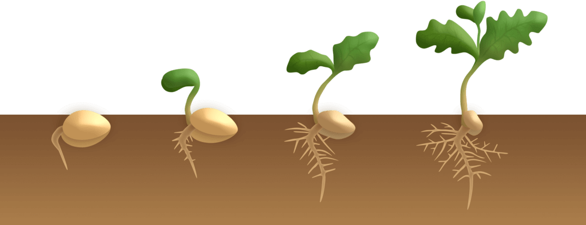

The Guide to Hydroponics At Home
So you’re interested in hydroponics? Good. Hydroponics is a new technology with old roots. We
find
traces of hydroponics
as far back as the Aztecs. Today, hydroponics has blossomed into a 2.1 billion dollar industry. Starting your
own
hydroponic garden is easier than you think! This guide to home hydroponics will prepare you to build your own at
home
hydroponic garden. Let's get started!
What is hydroponics?
Hydroponics is soilless gardening, plants are grown in a medium such as rocks, rock wool, or
expanded clay instead of
soil. Nutrients are provided via nutrient solutions. Hydroponic systems circulate the nutrients to the plants to
provide
an effective environment for growth. Lettuce and tomatoes are the most common things grown in hydroponic
systems,
but
almost anything can be grown.
Hydroponic systems can be installed almost anywhere. They can be in greenhouses, outside, in warehouses, or even
in
your
own home. This versatility allows anyone, regardless of location or space, to construct a system to suit their
needs
Advantages of Hydroponics
Space
hydroponic gardens require very little space to operate, which makes them perfect for home
hydroponics. They can be as
big or as small as you would like. Since plants do not require any soil, plants can be placed closer together
than
in
soil. Also, plants can be grown stacked on top of one another in a process called vertical gardening, further
increasing
space efficiency.
Water Usage
While gardening is inherently eco-friendly, classic gardening loses a lot of water to
evaporation.
Water conservation is
a key part of hydroponic growth. Hydroponic gardening uses 80% less water than traditional gardening. This is
possible
due to the decreased evaporation in hydroponic systems compared to traditional systems. Additionally, water can
be
reused in hydroponics to further decrease water usage.
Finer Control
Hydroponics systems are completely controlled by you. This may sound scary, but I promise you it
is
an amazing thing.
There are very few outside events than can influence your hydroponic system. This control allows you to make
fine
adjustments to your system as you see fit. You can change the nutrient solution, light levels, pH levels, and
much
more
to optimize crop growth, quality, and health to ensure you harvest the best goods possible.
Faster Growth
Plants in hydroponic gardens typically grow 20% faster compared to plants grown in the ground.
Since
the roots of plants
in hydroponic gardens are directly in nutrient solutions, they can absorb nutrients very quickly. Also, by using
artificial light, we can extend the amount of time plants spend doing photosynthesis per day. Increasing growth
allows
for more crop cycles and minimizes the wait time between crop harvesting, enabling you to enjoy the fruits of
your
labor
sooner.
Time Save
Once your hydroponic system is set up, there is little work left. Besides regulating water
quality
and ensuring the
system is working as intended, there’s nothing to do except wait for your plants to bear fruit. There’s no need
to
weed
anything, as they will not grow in your garden. And the risk of pests and diseases is significantly reduced.
Being
that
there is no dirt to get you dirty, hydroponics is much cleaner than traditional gardening.
Cost
Hydroponics can provide access for affordable, high-quality vegetables to all. This can be
especially
important for
people without space for a traditional garden or located in food deserts. After your hydroponic garden is set
up,
the
cost of growing your plants is minimal, especially if your system doesn’t use artificial light. The other large
costs -
water, nutrients, and temperature control can all be mitigated in various ways.
Disadvantages of Hydroponics
Difficulty
While you shouldn’t let the challenges of hydroponics drive you away, there is a learning curve
you’ll have to get
through. This guide and other pieces of hydroponicsathome.com will help you along the way. Much of hydroponics
is
trial
and error. There will be annoying issues you can't solve, but hydroponics is rewarding when treated correctly.
The
difficulty of hydroponics can become a fun adventure.
Electricity Consumption
Advanced hydroponics requires a slew of equipment: pH monitors, lights, motors, nutrient pumps,
and
temperature
controls. You won’t have to worry as much about this now, but as you travel deeper into hydroponics electric
costs
can
start to add up. To save money, consider checking out our guide to reducing costs.
Initial Cost
No lie, the initial cost of setting up a hydroponic system is not cheap. Most parts of a
hydroponic
system are one-time
purchases, which is awesome for longevity, but bad for initial commitment. By building your own systems and
researching
beforehand, you can reduce the cost.
Types of Hydroponic Systems
While there are many different types of hydroponic systems, for at home, beginner hydroponic
systems
you have 2
realistic options.
Deep Water Culture
Also known as DWC, this style is the simplest and
cheapest for small-scale farms. DWC systems have
plants suspended
above buckets or tanks of nutrient-filled water, while the roots of the plants are in the water. Plants are
grown
in
Rockwool, peat plugs, or expanded clay in net cups. Airstones are placed in the tanks to provide proper root
oxygenation.
Check out our complete DWC setup
Nutrient Film Technique
Also known as NFT, this style is recommended for more ambitious hydroponic gardeners. NTF
systems
are comprised of long
(typically PVC) pipes with holes cut out on top for plants to grow in. A nutrient solution is cycled through the
pipes
to provide nutrients to the plants.
The main reservoir holds the water and a pump circulates the water to the pipes. Several times throughout the
day,
nutrients are injected into the water stream to feed the plants. This provides fresh, oxygenated water to the
plants
24/7. Monitoring is required to keep plant roots from turning brown, a sign of oxygen deprivation.
Check out our complete NFT setup
If you’re not sure what type of hydroponic system you want to use just yet, don’t fret!
Let's
learn
about how to care
for a hydroponic system.
Germination

The first step in building your at home hydroponic system is germination. Germination with
hydroponics is very easy.
Simply place your seeds into the growing medium (Rockwool, rock, expanded clay). Then, water the seeds with a
half-strength nutrient solution. You can determine the necessary nutrient strength by looking at the nutrient
packaging.
Place the seeds in a warm sunny location or under artificial lighting for 16 hours per day. If possible, cover
the
plants with clear plastic to increase humidity. If these steps are followed, you can expect to get a 90%
germination
rate.
The amount of time before you can transplant the plants to your hydroponic systems varies depending on what
plant
you’re
growing. The guide below shows how long it takes before you can transplant seedlings. Your plants may be ready
before or
after the dates. To determine if your plants are ready to be transplanted, check out our guide on transplanting
-
Lettuce
2 Weeks
-
Tomatoes
3 Weeks
-
Basil
1-2 Weeks
-
Peppers
3-4 Weeks
-
Strawberries
3 Weeks
-
Green Beans
2-3 Weeks
Growing
Once the plants are in your hydroponic system you’re on the home straight. Making sure your
system
is in order is easy
and you’re weeks away from delicious hydroponically grown food.
Lighting
If you’re growing plants outdoor/ with natural light, It’s best to place your at home hydroponic
system where it will
get sun all day. Since your plant will be getting water all day, there’s no worry of the plants drying out due
to
too
much sun.
If you’re growing your plants with artificial light, It's best to have them in the light for 18 hours per day.
This
may
seem extreme as plants never receive that much light naturally, but the enhanced growing conditions provided by
your
at
home hydroponic system allows for the increased light duration.
Water
Maintaining good water quality is the most important thing you have to do while growing your
plants.
It starts by making
sure before you put water into the system, that the system is extremely clean. You can clean your system
following
our
simple system cleaning guide.
The water you put into your system should be clean, it’s best to use reverse osmosis/ distilled water, but tap
water
will do. You can add nutrients to the water before or after your put it in the system, commonly it’s easiest to
do
before. Follow the nutrient recommendations on the packaging to determine how much nutrient to add.
Twice per week, you should measure the electrical conductivity(EC) and pH levels of your system. You can
regulate
the pH
by using pH up and down solutions. It’s best to keep the pH of your system between 5.5 and 6.5. Regulating EC
can
be
challenging. You should aim for an EC of 1.6, but it will take some trial and error to determine the best way to
regulate EC for your at home hydroponic system.
It's almost inevitable that you will get algae in your system. It can be reduced by keeping a clean system and
using
opaque containers, but you will always have some. Don’t worry too much about algae. It may be ugly, and
annoying,
and it
will consume some of your fertilizer, but it’s harmless to your plants. If algae completely overtake your
system,
you
may want to use an algaecide. It’s not necessary, but that choice is up to you.
Harvesting
Once your plants are ready to be harvested, you must take caution to not hurt your plants or
system.
It’s recommended
you use clean gloves as you make get nutrient solution on your hands, which isn’t great for you. If you’re
harvesting
plants where you take the whole plant, like lettuce, you should take the plant, and save the growing medium if
possible
for another cycle. One of the best things about harvesting in hydroponics is there’s really no need to wash your
food.
It was grown in no soil, and the environment has been relatively clean.
Questions
By no means is this guide complete, but it is a great start. If you’re ready to get started,
consider checking out one
of the hydroponic styles //DWC or //NTF. If you have any questions, drop us an email at
hydroponicsathome.us@gmail.com